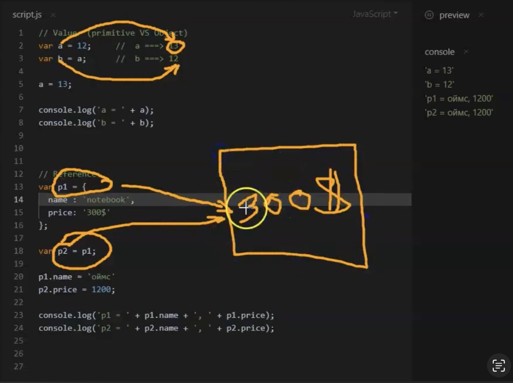

Primitive vs. Object
Privimitive өгөгдлийн төрлийг ийш тийш нь дамжуулахад аюулгүй байдал бол
Object өгөгдлийн төрлүүдийг дамжуулах үед утга нь өөрчлөгдөж ирдэг тул
болгоомжтой байх хэрэгтэй. Учир нь

-
Value (Premitive буюу энгийн хувьсагчийн өгөгдлийг утгыг өөр
хувьсагчид дамжуулахад санах ойд шинээр үүр үүсч дамжуулсан утга
тухайн хувьсагчид зориулсан шинэ үүрэнд хуулбарлагддаг)
- var price = 100,000;
- function info(price) {price = price - 2000}
-
Reference (Object буюу обьект хувьсагчийн өгөгдлийн утгыг өөр обьект
хувьсагчид дамжуулахад reference буюу нэг санах ойн үүрлүү заах
байдлаар утгыг харуулдаг ба аль нэг обьект хувьсагчийн утгыг өөрчлөх
үед нөгөөгийнх нь утга хамтдаа өөрчлөгдөнө.)
- var product1.price = 100,000;
- var product[0] = 200,000;
-
function newInfo(product1) {product1.price = product1.price - 2000}